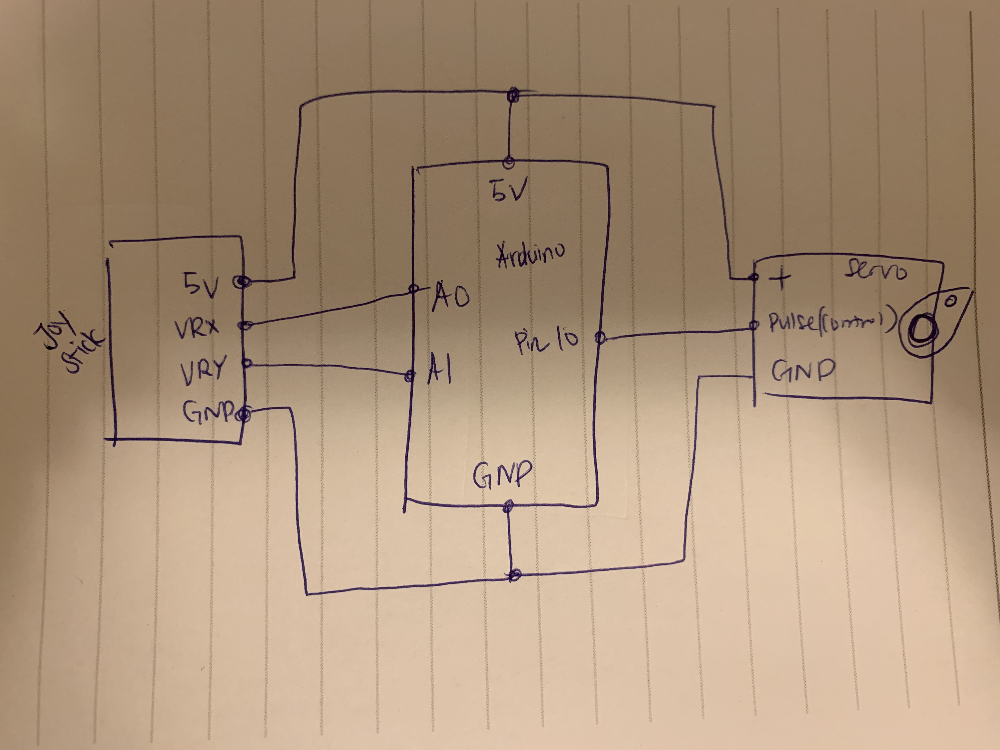
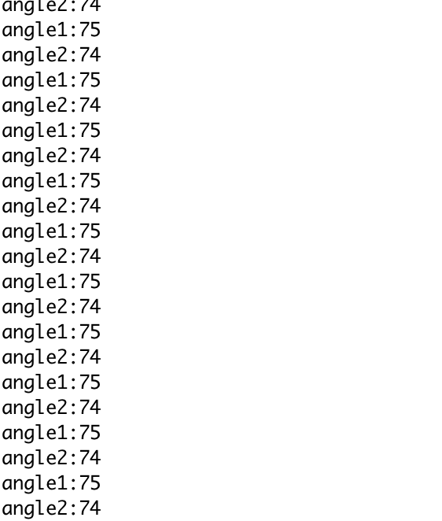

Fifth assignment - Motors!
Circuit


Creating a schematic, circuit, and code that uses an input device to control a motor! Your input device will be the joystick and the motor can be the servo or the DC motor. You must write the motor's position to the Serial port and show the output of the serial port monitor.
Schematic
Firmware
#include// include servo library Servo sv1; // create a servo object void setup(){ sv1.attach(10);// servo motor will be controlled by pin 10 Serial.begin(9600); // starts a serial monitor for value checking } void loop() { int x = analogRead(A0); //A0 pin for reading x value int y = analogRead(A1); //A1 pin for reading y value int angle1 = map(x, 0, 1023, 0, 150);//moving up to 150 from 75 in x value. sv1.write(angle1); //set the srvo position according to the joystick value int angle2 = map(y, 0, 1023, 0, 150);//moving up to 150 from 75 in y value. sv1.write(angle2);//set the srvo position according to the joystick value // Write the current values to the serial monitor Serial.print("angle1:"); Serial.println(angle1); Serial.print("angle2:"); Serial.println(angle2); delay(15); //adding delay }
Serial Monitor
Circuit's operation

Tada! The servo motor moving by controlling this joystick with a desired degree.